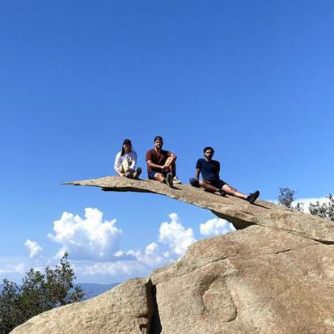

Hi there, thanks for visiting my website! My name is Connor Geshan and I am a first year mechanical engineering master's student
at Carnegie Mellon University. I have interests in automation, engineering design, making, and tinkering both inside and outside
of the classroom. I enjoy collaborating with other passionate engineers to solve complex real-world problems and improve people's quality
of life through various engineered solutions. Academically I am fascinated with computer vision, machine learning, as well as space and
humanoid robitics. I have molded my graduate coursework around these passions and am eager to develop solutions throughout my professional
career.
My personal interests include making, ice hockey, golf, and anything to do with my dog Dakota. I played four years of NCAA Division III
ice hockey during my undergraduate years at Western New England University. Since graduating I have re-ignited my passion for golf and
am always looking to play a round in my free time. Besides sports, I enjoy making and hands on building, please see some of the things I
have built on my projects page! Dakota, my labradoodle, and I enjoy playing fetch and going on long hikes. A
final fun fact about me, I was cast as Prince Charming in my highschools production of Rodger and Hammerstein's Cinderella.